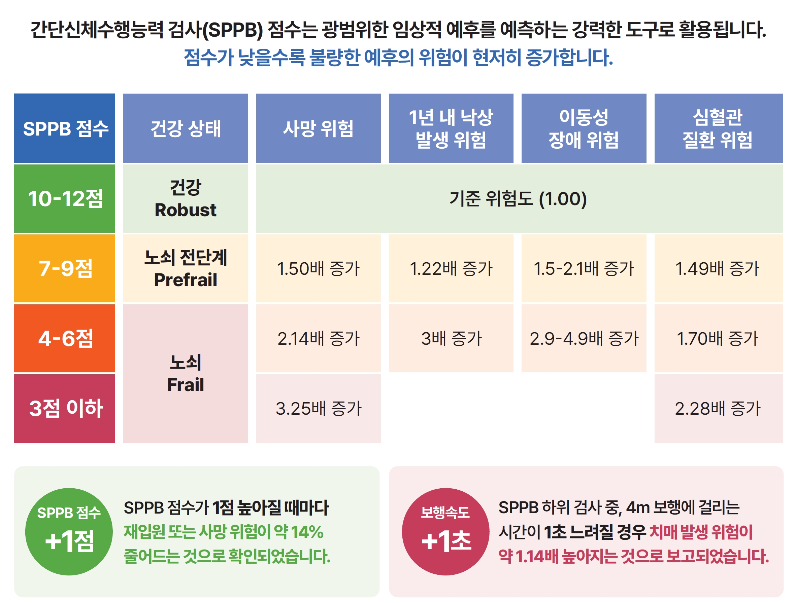

SPPB는 고령자의 하지 기능을 평가하기 위한 표준화·검증된 도구입니다. 정적균형 검사, 보행속도 검사, 의자 일어서기 검사의 세 가지 하위 검사로 구성되며, 노쇠 및 근감소증 연구, 임상 평가, 지역사회 통합돌봄 등 다양한 분야에서 활용됩니다.
각 하위 검사는 하지 기능의 서로 다른 영역을 평가하며, 각각 0–4점으로 채점되어 최대 총점 12점이 산출됩니다.
세 가지 하위 검사의 점수(각 0–4점)를 합산하여 0–12점의 총점을 산출합니다.
| 총점 | 기능 수준 | 임상적 의미 |
|---|---|---|
| 0 – 6 | 심각한 기능 저하 | 사망, 낙상, 입원, 이동성 장애 위험이 높음. 우선적 중재 대상. |
| 7 – 9 | 중등도 기능 저하 | 중간 위험군. 운동·재활 중재 효과가 가장 크게 나타나는 구간. |
| 10 – 12 | 정상~양호 | 위험이 낮은 군. 기능 변화를 추적하기 위한 기준선 설정에 유용. |
총점뿐만 아니라 어떤 하위 검사에서 기능 저하가 나타나는지를 함께 파악하면 개별화된 중재 방향 설정에 도움이 됩니다.
SPPB는 단순한 점수 산출을 넘어, 지역사회 거주 고령자의 사망률, 낙상 위험, 이동성 장애를 독립적으로 예측합니다.
SPPB는 균형, 보행, 하지 근력 세 영역에 걸친 연령 관련 기능 저하의 누적 부담을 반영하여, 포괄적인 노쇠 바이오마커로 활용됩니다. 점수가 낮을수록(≤6점) 5년 사망률, 입원 위험, 낙상 발생이 현저히 높아집니다.
Pavasini 등의 체계적 문헌고찰 및 메타분석(2016년; n > 30,000명)에서 SPPB 점수가 1점 상승할 때마다 전체 사망 위험이 통계적으로 유의하게 감소함을 확인했습니다. 동일한 기울기가 재입원, 요양시설 입소, 이동성 장애 발생에서도 관찰됩니다.
노쇠 관점에서 SPPB는 Fried 노쇠 표현형의 신체적 차원(느린 보행속도, 하지 근력 저하)을 반영하며, 균형 하위 검사는 보행 지표만으로는 파악하기 어려운 자세 조절 능력과 낙상 위험에 대한 추가 정보를 제공합니다.

SPPB 점수는 5년 사망률, 낙상 위험, 입원 위험을 예측합니다. 점수가 1점 높아질수록 불량한 결과 위험이 의미 있게 감소합니다.
SPPB는 유럽, 북미, 아시아 및 국제 기구의 주요 임상 분야 가이드라인에서 권고됩니다.
| 임상 분야 | 가이드라인 / 기관 | SPPB 역할 |
|---|---|---|
| 근감소증 | EWGSOP2 (유럽, 2018) | 진단을 위한 신체기능 평가의 1차 기준 |
| 근감소증 | FNIH 근감소증 프로젝트 (미국, 2014) | "약함+느림" 표현형 기준; 보행속도 역치 ≤0.8 m/s |
| 근감소증 | AWGS 2019 (아시아) | 진단 및 중증도 분류를 위한 신체기능 지표 |
| 통합돌봄 | WHO ICOPE (2019) | 지역사회 고령자 이동능력 선별 평가 도구 |
| 종양학 | ASCO (2018) | 포괄적 노인평가(CGA) 내 신체기능 영역 지표 |
| 종양학 | ESMO/SIOG (2021) | 기능 평가 및 항암 독성 위험 층별화 |
| 심장 재활 | JCS/JACR (일본, 2021) | 심장 재활 중 하지 기능 평가 도구 |
| 코호트 연구 | NHANES (미국) | 인구 수준 기능 추적을 위한 신체기능 모듈 |
| 코호트 연구 | KLHAS (한국) | 국가 노화 코호트 내 기능 궤적 추적 |
| 임상시험 | SPRINT (미국, 2016) | 신체기능 및 보행속도 결과 지표 |
SPPB는 연구를 넘어 전 세계 보건 시스템과 국가 돌봄 프로그램에 통합되고 있습니다.
🇰🇷 대한민국 — 국가 통합돌봄 프로그램
국내 델파이 합의 연구에서 지역사회 거주 고령자를 위한 통합돌봄 프로그램의 표준 신체기능 평가도구로 SPPB를 권고했습니다. 현재 보건소를 통해 운영되는 지역사회 노쇠 예방 프로그램에 통합되어, 대규모 표준화 기능 선별을 가능하게 하고 있습니다.
🌍 WHO — ICOPE 프레임워크
WHO 통합돌봄(ICOPE) 프레임워크는 이동능력 영역의 평가 도구로 SPPB를 명시적으로 권고하여, 100개 이상의 국가에서 고령자 집단 수준 기능 선별의 국제 기준으로 자리잡았습니다. 이 프레임워크는 각국 보건 시스템이 SPPB를 기능 평가 프로토콜로 채택하도록 안내합니다.
🇪🇸 스페인 / 유럽 — CIBERFES 합의문
스페인의 CIBERFES 네트워크(노쇠 및 건강 노화 분야 국립 생의학 연구 네트워크)와 유럽 노화 컨소시엄은 노화 임상 연구와 코호트 연구에서 합의된 측정 도구로 SPPB를 채택하여, 국가 간 비교 가능성과 방법론적 견고성을 확보하고 있습니다.
AndanteFit은 다중 센서 기술을 활용해 SPPB 세 가지 하위 검사를 모두 자동화합니다. 수동 측정 없이 3분 이내에 검사가 완료되며, 한국과 싱가포르에서 수행된 동료 심사 연구에서 수동 SPPB와 높은 일치도(ICC 0.94–0.97)가 확인되었습니다.